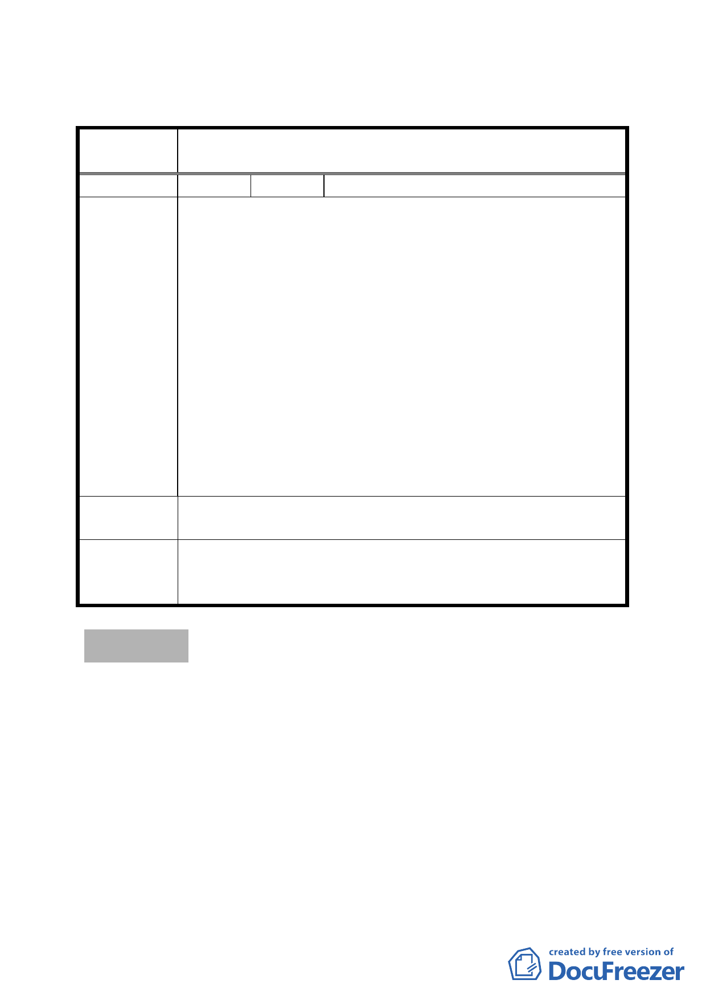

二、公民或團體陳情意見審決如後附綜理表。
臺北市都市計畫委員會公民或團體所提意見綜理表
案
名
配合捷運系統松山線北門站工程變更商業區為交通用
地主要計畫案
編 號 １ 陳情人 交通部臺灣鐵路管理局
1.查本案 E1、E2 基地因 95 年 6 月 29 日經北市文化資產審議
委員會決議略以「台鐵北門官舍區為清代機器局及淡水河
河溝頭碼頭所在位置，E1、E2 基地開發前應先進行歷史遺
構探勘，並將探勘結果提送委員會審核後始可進行」，本局
已於 98 年 8 月專案委請國立成功大學及中央研究院辦理全
區歷史遺構探勘，目前正積極進行中。
陳情理由
2.復查本基地業已列為政府都市更新優先推動單元，目前 貴
府規劃「臺北捷運松山線」為國家重大交通建設，本局當
配合辦理。但 貴府捷運局就單方捷運建設需要，忽視歷史
遺構與都市更新及發展，逕將本局經管之 E1、E2 基地部分
土地切割變更為交通用地，勢必不利「臺北車站特定專用
區」更新再生及未來發展，故本變更案應俟遺構探勘完成
後，再併同文化資產保存、都市更新及捷運建設等議題整
體規劃變更，方為妥適。
建議辦法
本變更案應俟遺構探勘完成後，再併同文化資產保存、都市
更新及捷運建設等議題整體規劃變更，方為妥適。
照案通過。本案尊重古蹟維護與保存，於後續之施工時間點
委員會決議 應儘量參考臺灣鐵路管理局所委託探勘結果，且施工過程中
若涉及文資法所規範事宜亦應依法處理。
討論事項 四
案名：變更「臺北市士林區福林段三小段 236 地號等 19 筆土地為
同小段 236 地號等 16 筆土地更新單元」範圍案
案情概要說明：
一、本更新單元位於臺北市中山北路五段以東、中山北路五段 756
巷及中山北路五段 740 巷之間所圍街廓內，計畫面積 1,832 平
方公尺。
二、本案更新單元土地使用分區為第三之ㄧ種住宅區，案前經市
府於 97 年 6 月 11 日公告劃定為更新單元，包含臺北市士林
-9-